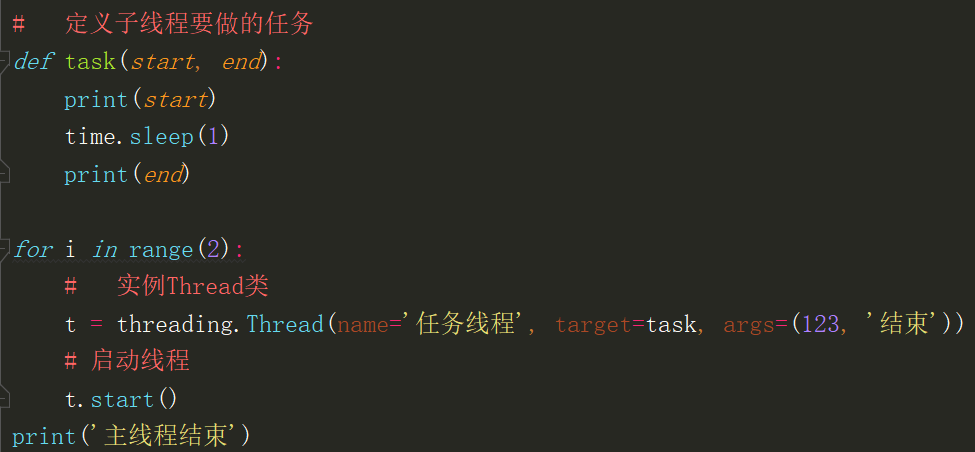

并发：多个任务同一时间段进行
并行：多个任务同一时刻进行
线程的实现
线程模块
Python通过两个标准库_thread 和threading，提供对线程的支持 , threading对_thread进行了封装
因此在实际的使用中我们一般都是使用threading
threading模块中提供了Thread , Lock , RLock , Condition等组件
Thread类
常用参数
target 表示调用对象，即子线程要执行的任务
name 子线程的名称
args 传入target函数中的位置参数,是一个元组，参数后必须加逗号
常用实例方法
Thread.run (self) 线程启动时运行的方法,由该方法调用target参数所指定的函数
Thread.start (self) 启动进程，start方法就是去帮你调用run方法
Thread.terminate (self) 强制终止线程
Thread.join (self, timeout=None) 阻塞调用，主线程进行等待
Thread.setDaemon (self，daemonic) 将子线程设置为守护线程
Thread.getName(self，name) 获取线程名称
Thread.setName (self，name ) 设置线程名称
创建线程
实例Thread类

继承Thread类
Join & setDaemon
主线程 : 当一个程序启动时 , 就有一个线程开始运行 , 该线程通常叫做程序的主线程
子线程 : 因为程序是开始时就执行的 , 如果你需要再创建线程 , 那么创建的线程就是这个主线程的子线程
主线程的重要性体现在两方面 :
1. 是产生其他子线程的线程
2. 通常它必须最后完成执行比如执行各种关闭操作
join : 阻塞调用程序 , 直到调用join () 方法的线程执行结束, 才会继续往下执行
setDaemon() 与 join() 基本上是相对的 , join会等子线程执行完毕 ; 而setDaemon则不会等，主线程结束，则全部结束
线程通信
锁
在多线程中 , 所有变量对于所有线程都是共享的
因此 , 线程之间共享数据最大的危险在于多个线程同时修改一个变量 , 那就乱套了
所以我们需要互斥锁 , 来锁住数据
线程间全局变量的共享
因为线程属于同一个进程，因此它们之间共享内存区域，所以全局变量是公共的
共享内存间存在竞争问题
在这里进行原子操作（取值、运算、赋值）的时候切换到了其它线程，一个线程还没赋值，另外的线程就已经给它赋值了，然后又切回来继续赋值
使用锁来控制共享资源的访问
加锁：Lock对象.acquire()
解锁：Lock对象.release()
队列的基本概念
一个入口，一个出口，先入先出（FIFO）
线程安全队列、操作一览
入队： put(item)
出队： get()
测试空： empty()
测试满： full()
队列长度： qsize()
任务结束： task_done()
等待完成： join()
线程池
池的概念
主线程：相当于生产者，只管向线程池提交任务，并不关心线程池是如何执行任务的，因此，也不关心是哪一个线程执行的这个任务
线程池：相当于消费者，负责接收任务，并将任务分配到一个空闲的线程中去执行
线程池的简单实现
python内置线程池
池的其他操作
操作一： close - 关闭提交通道，不允许再提交任务
操作二： terminate - 中止进程池，中止所有任务